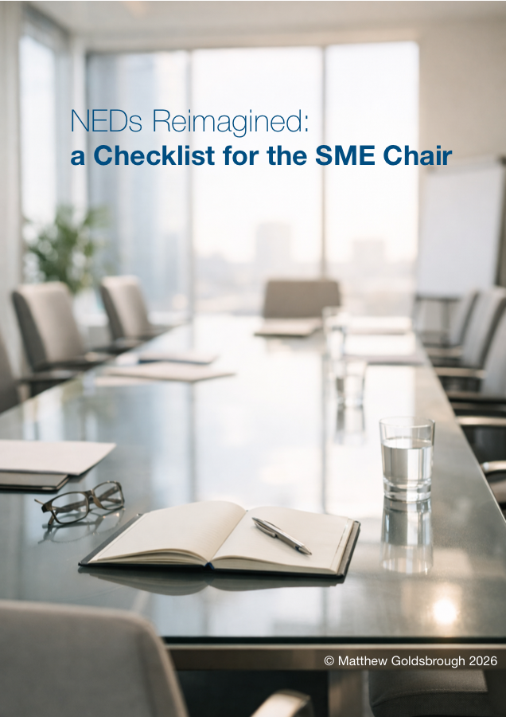

PDF, 2.8 MB
NEDs Reimagined: a Checklist for the SME Chair
A short checklist for SME Chairs considering how to make better use of Non-Executive Directors, sharper challenge and independent judgement.
Downloads
Selected resources for boards that want sharper contribution from Non-Executive Directors, better chairing habits and clearer decisions.

PDF, 2.8 MB
A short checklist for SME Chairs considering how to make better use of Non-Executive Directors, sharper challenge and independent judgement.